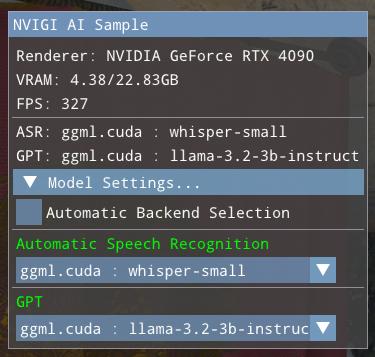

NVIGI 3D Sample
Version 1.1.0
This project combines NVIGI and Donut (https://github.com/NVIDIAGameWorks/donut) to create a sample app demonstrating an NVIGI AI integration.
IMPORTANT: For important changes and bug fixes included in the current release, please see the release notes at the end of this document BEFORE use.
What is the Sample?
The Donut-based NVIDIA NVIGI (In-Game Inference) 3D Sample is an interactive 3D application that is designed to show how one might integrate such AI features as speech recognition (ASR) and chatbots (GPT/LLM) into a UI-based workflow. The focus in the sample is showing how to present the options to the user and run AI workflows without blocking the 3D interaction or rendering.
Requirements
Hardware:
Windows development system with an NVIDIA RTX 30x0/A6000 series or (preferably) 4080/4090 or RTX 5080/5090 with a minimum of 8GB and recommendation of 12GB VRAM. Note that some plugins only support 40x0 and above (e.g. the TensorRT-LLM plugin), and will not be available on 30x0. Currently SDK supports only x64 CPUs.
Software:
NVIDIA RTX driver
r551.78 or newer required for functionality
For maximum performance, an r555.85 or newer driver is recommended
MS Visual Studio 2022 (2019 may be compatible, untested)
cmake (3.27.1 tested) installed in the command prompt path
Windows SDK including DirectX SDK. Ensure that FXC.exe (https://learn.microsoft.com/en-us/windows/win32/direct3dtools/fxc) is in your PATH.
Etc:
An NVIDIA Integrate API key, needed to use the GPT cloud plugin. Contact your NVIDIA NVIGI developer relations representative for details if you have not been provided one.
If you wish to use OpenAI cloud models, an OpenAI account API key is needed.
Directory Setup
Using the NVIDIA NVIGI (NVIGI) sample is much easier if NVIGI core, the plugins, the sample and the AI models are in “standard layout”. If you received your SDK pack as a combined, single zip or download, it is likely already in standard layout once the provided setup_links.bat is run to generate some of the directories listed below as links. Specifically, the following directories should be siblings under some <ROOT> directory (the root directory of the provided pack):
nvigi.modelsnvigi.testplugins/sdk(contains the AI inference plugins)
sample(This sample)
With this directory structure, setup becomes easier and some things will “just work”. Note that this directory structure can also be simulated via junction links (mklink /j) which is exactly what the setup_links.bat file in combined, prebuilt) binary packs of NVIGI sets up. In the case of working with NVIGI from git source code pulls, this will need to be set up manually.
Setting up to Run the Sample
There are several steps that are required in order to be able to use all of the NVIGI features shown in the sample:
Downloading a selection of manual-download models as pre-loaded. These represent models that an application would bundle with their installer. NOTE if you manually download a model while the sample is running, you will need to exit and restart the sample application in order for the model to be shown as an option in the UI.
Setting up the NVIDIA Cloud API key. The enables the use of the example cloud GPT plugin.
Downloading Models Offline
The model directories under <ROOT>/nvigi.models will, in some cases, include a Windows batch file named download.bat. Double-clicking these files will download publicly-available models that can be used in the sample once downloaded. These are referred to as “manually downloaded” models. Other directories will include a README.txt file that describes how to download and set up the model; these are commonly NVIDIA NGC models that require the developer to be signed into their authorized developer account on NGC in order to access them. See the README.txt for the model in question for details.
At the very least, in order to run the 3D Sample, we recommend downloading at least one nvigi.plugin.asr.ggml and one nvigi.plugin.gpt.ggml to avoid an error dialog in the Sample that indicates no local models are available.
Setting up the GPT Cloud Plugin
The NVIGI Cloud GPT plugin that is supported by this sample uses a setup based upon an API key from a developer account on https://build.nvidia.com/explore/discover. The basic steps to set this up are:
Navigate your browser to https://build.nvidia.com/explore/discover
Sign up or sign on to a developer account
Navigate to the model that the sample currently supports: https://build.nvidia.com/meta/llama-3_1-405b-instruct
Next to the Python code example, click the “Get API Key” button and save the key for reference
Set this key into your environment as the value of
NVIDIA_INTEGRATE_KEY
If you wish to use the OpenAI cloud models, you will need to generate an OpenAI API key as per their instructions and set it as the value of the environment variable OPENAI_KEY
IMPORTANT: After setting an API Key as an environment variable in the system properties, Visual Studio (if used) or the command prompt used to launch the Sample must be restarted to read the new environment variable.
Launching the Sample
For those using a prebuilt NVIGI binary pack, the sample executable is available immediately and can be run. For those building from source, see below in this document how to set up and build the sample before running.
We will call the location of the sample directory <SAMPLE_ROOT>. In a standard layout, this will likely be <ROOT>\sample. If the SDK plugins and sample are in standard layout, one need only run <SAMPLE_ROOT>\run.bat, and it will find the manually-downloaded AI models in:
Prebuilt binary packs:
<SAMPLE_ROOT>\..\nvigi.modelsGit-pulled source:
<SAMPLE_ROOT>\nvigi_plugins\data\nvigi.models
To launch the sample from the command line (either pre-built or rebuilt as per the instructions below), use the command line:
If the pack is in standard layout, then open a command prompt to <SAMPLE_ROOT>\_bin and run:
.\NVIGISample.exe
Note that owing to the default path to the models directory, this is equivalent to running:
.\NVIGISample.exe -pathToModels ../../nvigi.models
If the pack is not in standard layout, then you will need to open a command prompt to <SAMPLE_ROOT>\_bin and run:
.\NVIGISample.exe -pathToModels <path to nvigi.models, inclusive, forward slashes>
To run the rebuilt sample from within the debugger, see the section below “Running the Sample in the Debugger”
Using the Sample
Main UI Page

On launch, the sample will show a UI box on the left side of the window as shown above, and will show a 3D rendered scene at the same time. This is the main UI mode. At the top are GPU, system and performance info. Directly below is the chat text window, which shows the results of GPT (and of ASR when used). Below this are the interaction controls for ASR and GPT. Details of their use are below. At the bottom is a listing of the current models/backends in use and the “Model Settings…” button that switches to model selection and settings mode.
The main UI page includes controls that allow the user to type in queries to the LLM or record a spoken query to be converted to text by ASR and then passed to the LLM. In addition, the “Reset Chat” button clears the chat window and resets the LLM’s history context, “forgetting” previous discussion. Typed and spoken input is handled as follows:
Speech. Click the “Record” button to start recording (the “Record” button will be replaced by a “Stop” button. Then, speak a question, and conclude by pressing the “Stop” button. The ASR plugin will compute speech recognition and print the recognized text, which will then be sent to the LLM for a response that will be printed in the UI. If the text returned from ASR is a form of “[BLANK AUDIO]”, then check you Windows microphone settings, as the audio may not be getting routed correctly in Windows. To test different microphones, user should select microphone from Windows settings. The model shipping with this release is the Whisper Small Multi-lingual, which supports a wide range of languages, with varying levels of quality/coverage.
Typing. Click in the small, blank text line at the bottom of the UI, type your query and press the Enter or Return key. The text will be sent to the LLM and the result printed to the UI.
Model Settings UI Pages
To change the selected models, the UI provides two modes: Manual and Automatic. To switch to the Settings page, click the “Model Settings…” triangle at the bottom of the Main UI page. This will show the currently-enabled settings page, which initially defaults to the Manual Settings page:
Upon switching to the Manual Settings page, the UI contains:
The current stats as shown in the Main UI page
A checkbox to switch between the Manual and Automatic backend selection modes
The currently-selected model/backend pairs for each feature
Drop-downs to select a model/backend pairing for each feature
In Manual mode, the drop-downs show all model/backend pairings available, grouped by model. For example:

Note that both local CUDA and remote cloud backends are shown for the model “llama-3.2-3b-instruct”. There may be multiple available backends for some models.
Selecting each type of model behaves slightly differently:
Selecting locally-available models will immediately load the model from disk. This will disable ASR or GPT until the new model is loaded, as the sample shuts down the previous model before loading the new one.
Selecting a cloud model will make a connection to the cloud. Generally, the UI will be immediately available again, as there is no local loading to be done.
Clicking the “Automatic Backend Selection” checkbox will switch to the Automatic Settings page:

This page is similar to the Manual Settings UI with some important differences:
Each feature dropdown only shows models, not backends. Each model will appear once
Each feature has an integer VRAM budget adjustment that sets the amount of VRAM that the model may use.
Unlike Manual mode, the user only selects a model in Automatic mode. The backend is selected automatically by code in the sample. Currently, that code selects in the following order:
If an NVIDIA GPU is present and a CUDA-based backend that is within the VRAM budget exists, select it
If a GPU is present and a GPU-based backend that is within the VRAM budget exists, select it
If a cloud API key is set for the domain (via the environment variables) and a matching cloud backend exists, select it
Select a CPU backend if available.
Adjusting the VRAM budget for a given feature can cause a new backend to be selected as the user is interacting.
This selection metric can be changed by changing the behavior of the function SelectAutoPlugin in NVIGIContext.cpp.
Logging from the Sample
By default, the pre-built sample will use Development plugins and core, and will launch a log window that shows the NVIGI log messages during init, creation, runtime and shutdown. In addition, logging to file may be enabled by specifying a path (directory-only) to where logs should be written:
NVIGISample.exe -logToFile ..\_bin <...>
With this option example a log file would be written to ..\_bin\nvigi-log.txt
These logs include such information as; Creation, System Information/Capabilities, and Plugin Discovery:
[2024-06-13 08:57:14.706][nvigi][info][framework.cpp:486][nvigiInitImpl] Overriding settings with parameters from 'E:\sample\_bin\/nvigi.core.framework.json'
[2024-06-13 08:57:14.707][nvigi][info][framework.cpp:512][nvigiInitImpl] Starting 'nvigi.core.framework':
[2024-06-13 08:57:14.707][nvigi][info][framework.cpp:513][nvigiInitImpl] # timestamp: Mon Jun 10 16:39:03 2024
[2024-06-13 08:57:14.707][nvigi][info][framework.cpp:514][nvigiInitImpl] # version: 1.1.0
[2024-06-13 08:57:14.707][nvigi][info][framework.cpp:515][nvigiInitImpl] # build: branch - sha 5261ff60dc5fcf6c53392cbed01d2205bf911199
[2024-06-13 08:57:14.708][nvigi][info][framework.cpp:516][nvigiInitImpl] # author: NVIDIA
[2024-06-13 08:57:14.708][nvigi][info][framework.cpp:517][nvigiInitImpl] # host SDK: 1.1.0
[2024-06-13 08:57:14.708][nvigi][info][framework.cpp:101][addInterface] [nvigi.core.framework] added interface '8ffd0ca2-62a0-4f4a-8840e27e3ff4f75f'
[2024-06-13 08:57:14.708][nvigi][info][framework.cpp:101][addInterface] [nvigi.core.framework] added interface '8a6572e0-f713-44c7-a2bf8493a9499eb2'
[2024-06-13 08:57:14.708][nvigi][info][framework.cpp:101][addInterface] [nvigi.core.framework] added interface '75e7a7bb-ca10-45a8-966db99000d6ea35'
[2024-06-13 08:57:14.709][nvigi][info][framework.cpp:101][addInterface] [nvigi.core.framework] added interface 'e2b94f2b-7ae8-467d-98e06f2b14410079'
[2024-06-13 08:57:14.731][nvigi][info][system.cpp:326][getSystemCaps] Found adapter 'NVIDIA GeForce RTX 4090':
[2024-06-13 08:57:14.731][nvigi][info][system.cpp:327][getSystemCaps] # LUID: 0.128553
[2024-06-13 08:57:14.731][nvigi][info][system.cpp:328][getSystemCaps] # arch: 0x190
[2024-06-13 08:57:14.731][nvigi][info][system.cpp:329][getSystemCaps] # impl: 0x2
[2024-06-13 08:57:14.732][nvigi][info][system.cpp:330][getSystemCaps] # rev: 0xa1
[2024-06-13 08:57:14.732][nvigi][info][system.cpp:331][getSystemCaps] # mem GBPS: 504.05
[2024-06-13 08:57:14.732][nvigi][info][system.cpp:332][getSystemCaps] # shader GFLOPS: 82575.36
[2024-06-13 08:57:14.732][nvigi][info][system.cpp:333][getSystemCaps] # driver: 555.40
[2024-06-13 08:57:14.733][nvigi][info][system.cpp:536][setTimerResolution] Changed high resolution timer resolution to 5000 [100 ns units]
[2024-06-13 08:57:14.733][nvigi][info][framework.cpp:216][enumeratePlugins] Scanning directory 'E:\sample\_bin' for plugins ...
[2024-06-13 08:57:14.742][nvigi][info][framework.cpp:300][enumeratePlugins] Found plugin 'nvigi.plugin.asr.ggml.cpu':
[2024-06-13 08:57:14.742][nvigi][info][framework.cpp:301][enumeratePlugins] # id: 2654567f-2cf4-4e4e-95455da839695c43
[2024-06-13 08:57:14.743][nvigi][info][framework.cpp:302][enumeratePlugins] # crc24: 0x87c5d4
[2024-06-13 08:57:14.744][nvigi][info][framework.cpp:303][enumeratePlugins] # description: 'ggml backend implementation for the 'asr' inference'
[2024-06-13 08:57:14.745][nvigi][info][framework.cpp:304][enumeratePlugins] # version: 1.1.0
[2024-06-13 08:57:14.745][nvigi][info][framework.cpp:305][enumeratePlugins] # build: branch - sha 5261ff60dc5fcf6c53392cbed01d2205bf911199
[2024-06-13 08:57:14.746][nvigi][info][framework.cpp:306][enumeratePlugins] # author: 'NVIDIA'
[2024-06-13 08:57:14.746][nvigi][info][framework.cpp:309][enumeratePlugins] # interface: {f0038a35-eec2-4230-811d58c9498671bc} v1
These can be useful when debugging issues or sending support questions.
In addition, if the GGML LLM/GPT plugin is used, the plugin may write a llama.log to the runtime directory. This file is written by the GGML code itself, and contains model-specific debugging output as per https://github.com/ggerganov/ggml
(Re)Building the Sample
NVIGI and the Sample
The sample needs several components of NVIGI in order to build. The easiest method of getting the NVIGI components is the pre-built, combined NVIGI package download mentioned at the top of this document, which contains all of the pieces including the sample, NVIGI core, and the AI plugins. This is likely the way you received this sample. The other option is to build and package the components from git-pulled source. Both methods are described below.
Using Standard-layout Prebuilt NVIGI Components
Note that the standard-layout NVIGI pack likely included a top-level setup_links.bat file. If this was run as per the top-level docs before trying to use the Sample, then the steps in this section are likely needless. However, this section explains what that script sets up.
Assuming standard-layout, i.e.:
<ROOT>
nvigi_core
plugins
sdk
sample
If they do not already exist, the following junctions would be needed/expected:
NOTE: As noted above, these steps are likely not needed if you have a standard-layout pack and ran the setup_links.bat script at the top level of the pack. They are for reference only
Open a command prompt to
<SAMPLE_ROOT>Make a junction link between
<SAMPLE_ROOT>/nvigi_coreand core, i.e. in standard layout, do the following:mklink /j nvigi_core ..\nvigi_coreMake a junction link between
<SAMPLE_ROOT>/nvigi_pluginsand the SDK plugins, i.e. in standard layout, do the following:mklink /j nvigi_plugins ..\plugins\sdkMake a junction link between
<ROOT>/nvigi.modelsand the models tree, i.e.<ROOT>/plugins/sdk/data/nvigi.modelsin standard layout, do the following:mklink /j nvigi.models ..\plugins\sdk\data\nvigi.modelsMake a junction link between
<ROOT>/nvigi.testand the test data tree, i.e.<ROOT>/pugins/sdk/data/nvigi.testin standard layout, do the following:mklink /j nvigi.test ..\plugins\sdk\data\nvigi.test
Using Locally-Built NVIGI Components
In order to build the Sample from git-pulled source components, you will need to build and package NVIGI Core into a “Runtime SDK” and build and package the SDK Plugins.
Setting up NVIGI Core
If you are building core and the plugins from scratch, then you will have already built and packaged an NVIGI Core “PDK”. However, unlike building plugins, the sample is an app and builds against the Core packaged as a “Core Runtime”. This is easy to do. Assuming that the git-pulled core tree is rooted at a location we will call <CORE_ROOT>, the steps are:
Batch-build all confgurations of core as per the core documentation
Open a VS Development Command Prompt to
<CORE_ROOT>Run
package.bat -config runtime -dir _runtimeThe “Core Runtime” will now be located in
<CORE_ROOT>\_runtime
Setting up the NVIGI SDK Plugins
Assuming that the git-pulled plugins tree is rooted at a location we will call <PLUGINS_ROOT>, the steps are:
Batch-build all confgurations of the plugins SDK as per the SDK documentation
Open a VS Development Command Prompt to
<PLUGINS_ROOT>Run
copy_sdk_binaries.bat <cfg>wherecfgis the desired SDK config, generallyReleaseorDebugRun
copy_3rd_party.batThe full set of “SDK components” will now be located in
<PLUGINS_ROOT>
Making the Links
Open a command prompt to
<SAMPLE_ROOT>Make a junction link between
<SAMPLE_ROOT>/nvigi_coreand the core runtime, i.e. do the following:mklink /j nvigi_core <CORE_ROOT>\_runtimeMake a junction link between
<SAMPLE_ROOT>/nvigi_pluginsand the SDK plugins, i.e. do the following:mklink /j nvigi_plugins <PLUGINS_ROOT>Make a junction link between
<ROOT>/nvigi.modelsand the models tree, i.e. do the following:mklink /j nvigi.models <PLUGINS_ROOT>\data\nvigi.modelsMake a junction link between
<ROOT>/nvigi.modelsand the test data tree, i.e. do the following:mklink /j nvigi.test <PLUGINS_ROOT>\data\nvigi.test
Generating the Build Files
The Sample uses CMake to generate the build files. We wrap the command line in a script for ease of use.
Open a Visual Studio (MSVC) development prompt to
<SAMPLE_ROOT>Run the
make.batscript (which runs cmake with the right settings to generate the build files into_build). Run this from the Visual Studio development prompt command line - do not simply double-click the file, as this will make it hard to review the resulting log.
Building the Sample
In MSVC, open
<SAMPLE_ROOT>/_build/NVIGISample.slnBuild Release or Debug - this will build the sample and then copy the executable and all DLL dependencies into
_bin. The Debug configuration will build the Sample source itself with optimization disabled and includes debug information. The Release configuration will build the Sample source itself with optimization and without debug information. Use Release for top performance (of the Sample code itself; the linked NVIGI SDK will not change). Use Debug for stepping through the code.
NOTE: Owing to an issue in the current build setup, we strongly recommend that when switching from one build config to another (e.g. from Production to Release), in order to build that config, do one of the following:
Touch a Sample source file before building to force a compile/relink
Delete
_bin\NVIGISample.exebefore building to force a relinkDo a full rebuild, not a minimal build
A fix is slated for a coming release
Running the Sample in the Debugger
In the Solution Explorer in MSVC, right click “NVIGI Sample : NVIGISample”
Select your current build configuration
Select the “Debugging” tag
Set the “Working Directory” to
$(TargetDir)Set the “Command Arguments” to:
If sample, core and plugins are from a prebuilt, combined binary pack in “standard layout”
-pathToModels ../../nvigi.modelsIf building locally from a set of git source repos
-pathToModels <PLUGINS_ROOT>/data/nvigi.models
F5 to launch
Command-line Options
A subset including the most interesting options to the most common users:
Arguments |
Effect |
|---|---|
|
Required for just about any use - documented above, should point to the downloaded and unzipped models tree |
|
Enables logging to file and sets the destination directory for logging. The log will be written to |
More Useful Command Line Arguments:
Arguments |
Effect |
|---|---|
-width 1920 |
Sets width |
-height 1080 |
Sets height |
-verbose |
Allows vebose info level logging logging |
-debug |
Enables NVRHI and Graphics API validation Layer |
-noSigCheck |
Does not do NVIGI dll signiture check |
-vsync |
Enables Vsync |
-scene “/myscene.fbx” |
Loads a custom scene |
-maxFrames 100 |
Sets number of frames to render before the app shuts down |
-noCIG |
Disable the use of CUDA in Graphics optimization (for debugging/testing purposes) |
Types of prompts supported
The sample, as shipped, focuses upon conversational “helpful AI assistant” interactions, designed for the user to ask questions and follow-up questions (owing to the availability of historical context). Other forms of prompting may be used by editing the source code in src/nvigi/NVIGIContext.cpp, in NVIGIContext::LaunchGPT at the initial system prompt:
std::string initialPrompt = "You are a helpful AI assistant answering user questions.\n";
The system prompt can be edited to change how the conversation is guided. Other, more complex examples such as RAG (Retrieval-Augmented Generation) are shown in the command-line samples provided and documented in the SDK. See the plugins/sdk documentation for details.
Multiple backends support
Using NVIGI, it’s possible to support multiple backends within single application. Sample app shows one such usecase using GGML and ONNX GenAI DirectML based backends. Support for multiple backends ensures application developer can create wide variety of inference pipelines. In the sample, based on user selection, particular type of backend is instantiated and used for inferencing.
Release Notes:
The current release has a significantly different layout and structure than what was shipped in the Early Access packs. This includes:
Updated to the new, split architecture of NVIGI, which makes the core, and the main AI plugins each more independent.
Added support for the UI to show a range of available models, including those that can be manually downloaded outside of the Sample.
Support for a more conversational LLM assistant with significant context.
Added support for CUDA in Graphics
The sample is designed for use with local systems - use of the sample on remote desktop is not recommended. Support for remote desktop is being investigated for an upcoming release.